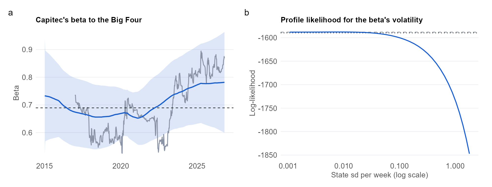

Implementation from first principles, with a model comparison, on real data
Data used
Weekly total returns of Capitec (CPI.JO), Standard Bank, FirstRand, Absa and Nedbank (equal-weighted composite), and the JSE All Share, from Yahoo Finance. Period: Jan 2015 to Oct 2026 (616 weeks). All public aggregate market data, so no personal data and no POPIA consent issue.
Methods used
Time-varying regression as a state-space model (random-walk beta, with and without drift); Kalman filter, smoother and likelihood coded by hand and validated against OLS and the dlm package; boundary-corrected likelihood-ratio test; profile likelihood; one-step forecast comparison with a Diebold-Mariano test against constant and rolling regressions; robustness to price returns, the market regressor, dropping Absa and sub-samples.
Question
Has Capitec’s share price become less tied to the Big Four banks over time, as a disruptor story would predict?
Key findings
0.80 to 0.82
beta to the Big Four, start to end
0.002
beta drift per year
0.222
p-value that the beta is constant
1.000
best forecast MSE ratio vs OLS
Time variation. The boundary-corrected likelihood-ratio test of a constant beta gives p = 0.222, and the weekly standard deviation of the beta’s change is 0.0079.
Drift. The beta drifts by 0.002 per year (95% interval -0.067 to 0.070), from 0.80 to 0.82 over the sample. The interval includes zero, so the data do not establish a drift.
Robustness. 0 of 3 whole-sample alternatives (price returns, the All Share as regressor, the composite without Absa) also show a drift below zero.
Forecasting. The lowest one-step forecast error comes from Expanding OLS, with an MSE ratio of 1.000 against expanding-window OLS.
Estimator check. The hand-coded filter matches OLS to within 1.7e-09 when the state noise is switched off.
What this does and does not show. A falling beta means Capitec has become less tied to the Big Four. It is not proof of disruption, because earnings growth, valuation or ownership changes would produce the same pattern.

Left: Capitec’s smoothed beta to the Big Four (blue, with 95% band) against a 104-week rolling regression (grey) and the constant OLS beta (dashed). Right: profile likelihood for the standard deviation of the beta’s weekly change.
What I would do differently
I would use a Student-t or GARCH observation error, because the Gaussian errors ignore the volatility clustering I found in Project 1. I would add the market as a second time-varying regressor so the Big Four beta is net of the market, and use market-cap weights in the composite.
---title: "Project 4: Capitec and the Big Four"subtitle: "A Kalman filter for a time-varying beta"toc: falsenumber-sections: falseexecute: echo: false warning: false message: false---```{r}#| include: false# Load the numbers saved by analysis.qmd (shows a dash until that page has been rendered)res <-if (file.exists("results/p4_results.rds")) readRDS("results/p4_results.rds") elseNULLval <-function(k, f ="%.2f") if (is.null(res)) "—"elsesprintf(f, res[[k]])txt <-function(k) if (is.null(res)) "—"else res[[k]]```::: {.pf-meta}| | ||:----|:--------------------------------------------|| Section and topic | Part 2: State-space models and the Kalman filter || Type of project | Implementation from first principles, with a model comparison, on real data || Data used | Weekly total returns of Capitec (`CPI.JO`), Standard Bank, FirstRand, Absa and Nedbank (equal-weighted composite), and the JSE All Share, from Yahoo Finance. Period: `r txt("period")` (`r val("n", "%d")` weeks). All public aggregate market data, so no personal data and no POPIA consent issue. || Methods used | Time-varying regression as a state-space model (random-walk beta, with and without drift); Kalman filter, smoother and likelihood coded by hand and validated against OLS and the `dlm` package; boundary-corrected likelihood-ratio test; profile likelihood; one-step forecast comparison with a Diebold-Mariano test against constant and rolling regressions; robustness to price returns, the market regressor, dropping Absa and sub-samples. |:::## QuestionHas Capitec's share price become less tied to the Big Four banks over time, as a disruptor story would predict?## Key findings```{r}#| output: asistile <-function(big, lab) sprintf('<div class="pf-stat"><div class="pf-stat-n">%s</div><div class="pf-stat-l">%s</div></div>', big, lab)cat('<div class="pf-stats">',tile(paste0(val("b_start"), " to ", val("b_end")), "beta to the Big Four, start to end"),tile(val("drift_yr", "%.3f"), "beta drift per year"),tile(txt("p_lr"), "p-value that the beta is constant"),tile(val("best_ratio", "%.3f"), "best forecast MSE ratio vs OLS"),'</div>', sep ="\n")```- **Time variation.** The boundary-corrected likelihood-ratio test of a constant beta gives $p$ = `r txt("p_lr")`, and the weekly standard deviation of the beta's change is `r val("sig_eta", "%.4f")`.- **Drift.** The beta drifts by `r val("drift_yr", "%.3f")` per year (95% interval `r val("d_lo", "%.3f")` to `r val("d_hi", "%.3f")`), from `r val("b_start")` to `r val("b_end")` over the sample. `r if (is.null(res)) "" else if (res$h2) "The interval lies below zero, so the data support a downward drift." else "The interval includes zero, so the data do not establish a drift."`- **Robustness.** `r val("n_neg", "%d")` of 3 whole-sample alternatives (price returns, the All Share as regressor, the composite without Absa) also show a drift below zero.- **Forecasting.** The lowest one-step forecast error comes from `r txt("best")`, with an MSE ratio of `r val("best_ratio", "%.3f")` against expanding-window OLS.- **Estimator check.** The hand-coded filter matches OLS to within `r val("diff_ols", "%.1e")` when the state noise is switched off.**What this does and does not show.** A falling beta means Capitec has become less tied to the Big Four. It is not proof of disruption, because earnings growth, valuation or ownership changes would produce the same pattern.{fig-alt="Two panels: the time-varying beta with a band and a rolling estimate, and the profile likelihood for the beta volatility."}## What I would do differentlyI would use a Student-t or GARCH observation error, because the Gaussian errors ignore the volatility clustering I found in Project 1. I would add the market as a second time-varying regressor so the Big Four beta is net of the market, and use market-cap weights in the composite.## Detailed analysis[Read the detailed analysis →](analysis.html){.pf-button}<small>Code and data: [Code & Data appendix](../../appendix/code-and-data.qmd). AI assistance: [AI Use Log](../../appendix/ai-use-log.qmd).</small>